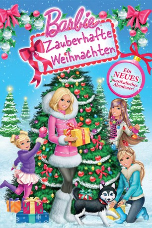

gesehen am 30.12.2019
gesehen am 30.12.2019Alternativ: Barbie: A Perfect Christmas (Englischer Titel) gesehen am 30.12.2019
 
 IMDB-Wertung: 5.7 / 10
IMDB-Wertung: 5.7 / 10  Metascore:
Metascore: 
Barbie und ihre Schwestern Skipper, Stacey und Chelsea hatten sich ihr Weihnachtsfest eigentlich ganz anders vorgestellt. Statt nach New York City zu fliegen, bleiben sie wegen widriger Wetterbedingungen in einer kleinen, abgeschiedenen Ortschaft hängen. Dort werden die vier Mädels jedoch herzlich von den Bewohnern empfangen, toben im Schnee, finden neue Freunde, auch unter den Tieren und erleben mitunter magische Weihnachten - ein großes Weihnachtskonzert, das die vier organisieren, inklusive.
Jahr: 2011
Dauer: 67 Minuten
FSK:
Land: USA Studio: UPHETonspuren:
Untertitel:
Auflösung: 1080p (1920x1080) Größe: 2887 MB
Genre: Animation/Trick, Familie, Weihnachten
Regisseur: Mark Baldo
Drehbuch: Elise Allen
Soundtrack: Rebecca Kneubuhl, Gabriel Mann
Darsteller:
 Maryke Hendrikse als Christie Clauson / Ivy Elif
Maryke Hendrikse als Christie Clauson / Ivy ElifDatei: X:\Kinder Collections\Barbie\Barbie 21 Zauberhafte Weihnachten (2011, FSK, 1920x1080).mkv seit 30.12.2019
Festplatte: Kinder-Filme+Trick
 Es gibt insgesamt 40 Filme in der Gruppe 'Kinder Collections\Barbie'
Es gibt insgesamt 40 Filme in der Gruppe 'Kinder Collections\Barbie'